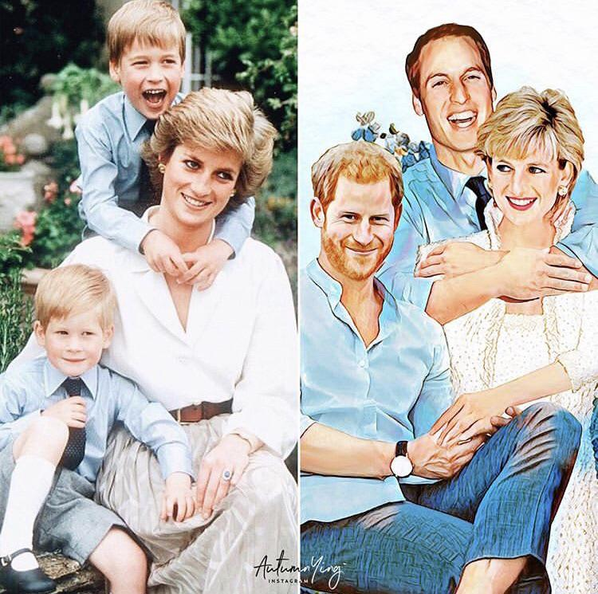
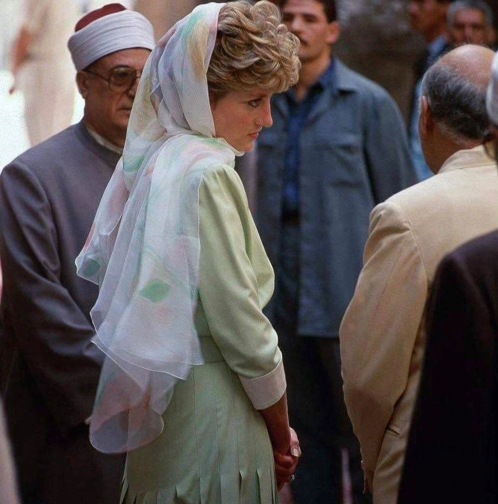

(born Diana Frances Spencer; 1 July 1961 – 31 August 1997),
was a member of the British royal family. She was the first wife of Charles,
Prince of Wales—the heir apparent to the British throne—and was
the mother of Prince William and Prince Harry.

Diana's activism and glamour made her an international icon and earned
her enduring popularity as well as unprecedented public scrutiny,
exacerbated by her tumultuous private life.
Diana was born into the British nobility and grew up close to the royal
family on their Sandringham estate. The youngest daughter of John Spencer,
8th Earl Spencer, and Frances Shand Kydd, she was strongly affected by their divorce in 1967.
She did not distinguish herself academically, but was talented in music, dance, and sports.
In 1978, she moved to London, where she lived with flatmates and took on various low-paying jobs.
came to prominence in 1981 upon her engagement to Prince Charles,
the eldest son of Queen Elizabeth II
,after a brief courtship.
Their wedding took place at St Paul's Cathedral in 1981 and made her
Princess of Wales,
a role in which she was enthusiastically received by the public. The couple had two sons,
the princes William and Harry, who were then second and third in the line of succession to the British throne.
Diana's marriage to Charles, however,
suffered due to their incompatibility and extramarital affairs.
They separated in 1992,
soon after the breakdown of their relationship became public knowledge.
The details of their marital difficulties became increasingly publicised,
and the marriage ended in divorce in 1996.
As Princess of Wales, Diana undertook royal duties on behalf of the Queen and represented her at functions across the Commonwealth realms.
She was celebrated in the media for her unconventional approach to charity work.
Her patronages initially centred on children and youth but she later became known for her involvement with AIDS patients and campaign for the removal of landmines.
She also raised awareness and advocated ways to help people affected with cancer and mental illness. As princess, Diana was initially noted for her shyness,
but her charisma and friendliness endeared her to the public and helped her reputation survive the acrimonious collapse of her marriage. Considered to be very photogenic,
she was a leader of fashion in the 1980s and 1990s. Media attention and public mourning were extensive after her death in a car crash in a Paris tunnel in 1997 and subsequent televised funeral.
Her legacy has had a deep impact on the royal family and British society.
